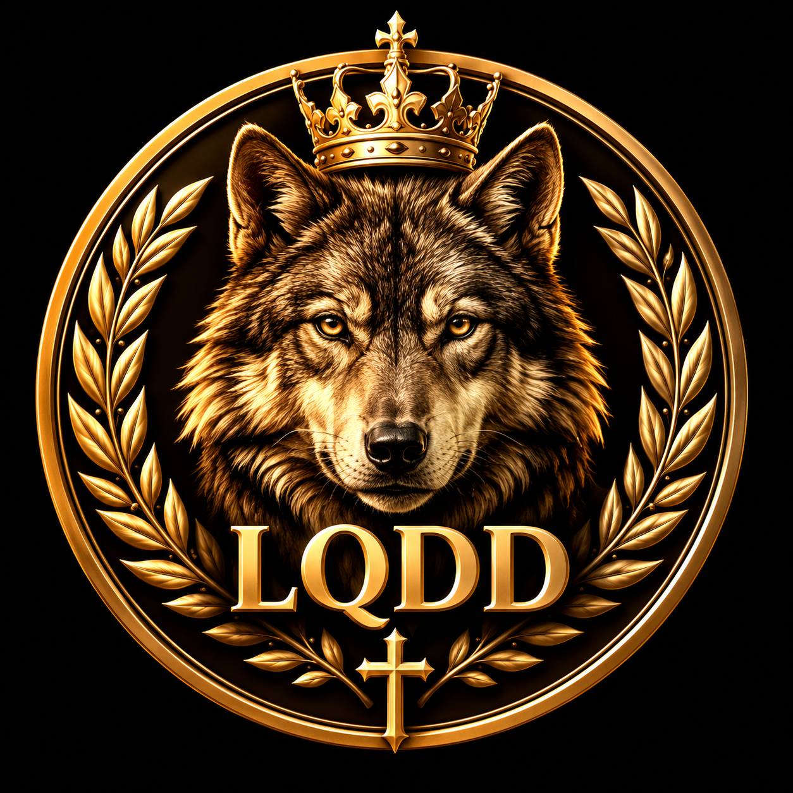

✦ SIGNIFICADO DE TU ANIMAL ✦
El sonido se reproduce al abrir la tarjeta.

¿Eres un Lobo que lidera, un Búho que calcula o un Zorro que encuentra caminos? Responde y descubre el animal que representa tu forma de ser.
Las preguntas y respuestas cambian de orden entre partidas. Test orientativo de reflexión personal.
Toca cualquiera de los animales descubiertos para abrir una tarjeta con su imagen, frase y significado. Los perfiles bloqueados se desbloquean al completar tests.